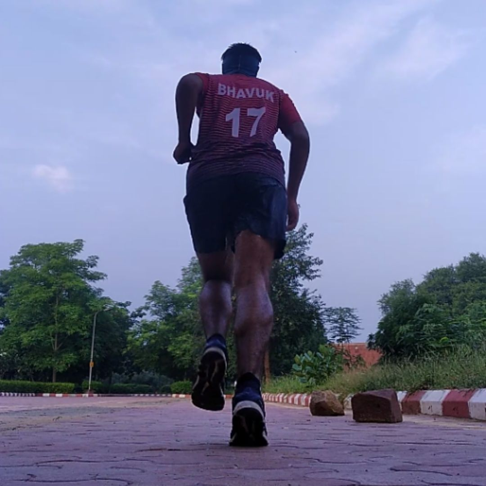

Bhavuk Runs 365
As I wasn't able to run that trail run so I was eager to do something special. So I decided that I will run for each and every day for 365 days for atleat 10 mins.
On 29 July 2019 I took a pledge to myself to run for every single day for a year and to record this I even made an instagram account bhavuk_runs_365. First few days were difficult, thinking of the routine of waking up early every morning, doing warm-up, go for a run, get ready for college- classes and labs, study, sleep early made me mad and I started thinking that I would not able to it.
But then my brother told me about this athlete Eluid Kipchoge who is greatest marathon runner runner of all time, he had won 11 out of his 12 marathons, world record holder, and thing what I liked about him was his idealogy he believes in "No Human Is Limited" and he says that it is your mind who makes you do things, you just need to control it and you will be able to do everything what you want to do.

This inspired me and I went on to run for every single day. Days, weeks, monthts passed I was going great, I woke up early every morning followed my routine and things were going well, I was feeling fine, some days I felt some cramps but foam rolling and massages were there to help me out through these days. And I was quite motivated to do what I had decided, then on 12th October Eluid Kipchoge became the first person to run a marathon under 2 hours(1:59:40), and that motivated even more and I was like yes I will run for every single day for a year and no one can stop me from doing that.